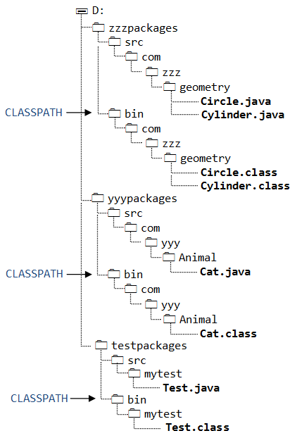
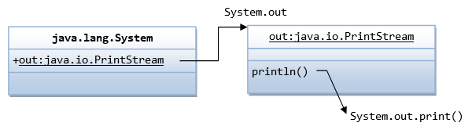
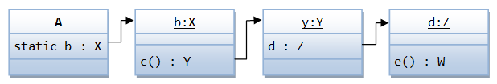
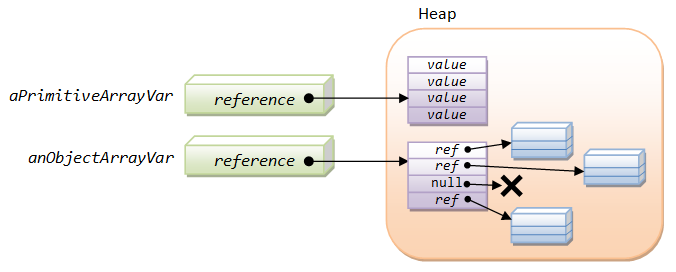

The "static" Variables and Methods
You can apply modifier "static" to variables and methods.
- A
staticvariable/method belongs to the class, and is shared by all instances. Hence, it is also called a class variable/method. - On the other hand, a non-
staticvariable/method (absence of keywordstatic) belongs to a specific instance of a class, also called an instance variable/method.
Each instance maintains its own storage. As the result, each instance variable/method has its own copy in the instances and not shared among different instances. To reference an instance variable/method, you need to identify the instance, and reference it via anInstanceName.aVaraibleName or anInstanceName.aMethodName().
A static variable/method has a single common memory location kept in the class and shared by all the instances. The JVM allocates static variable during the class loading. The static variable exists even if no instance is created and regardless of the number of instances created. A static variable/method can be referenced via AClassName.aVariableName or AClassName.aMethodName(). It can also be referenced from any of its instances (but not recommended), e.g., instance1.aVaraibleName or instance2.aVaraibleName or instance3.aVaraibleName.
Non-static variables/methods belong to the instances. To use a non-static variable/method, an instance must first be constructed. On the other hand, static variables/methods belong to the class, they are global in nature. You need not construct any instance before using them.
One usage of static variables/methods to provide a "global" variable, which is applicable to all the instances of that particular class (for purpose such as counting the number of instances, resource locking among instances, and etc).
UML Notation: static variables/methods are underlined in the class diagram.
Example
Instance variable won't work!
Suppose that we want to count the number of instances created. The following codes just don't work?!
public class Circle {
public int count = 0; // To count the number of instances created.
// Set to public to simplify access.
private double radius;
public Circle(double radius) {
this.radius = radius;
++count;
}
}
public class TestCircle {
public static void main(String[] args) {
Circle c1 = new Circle(1.1);
System.out.println(c1.count); // Output: 1
Circle c2 = new Circle(2.2);
System.out.println(c2.count); // Output: 1
Circle c3 = new Circle(3.3);
System.out.println(c3.count); // Output: 1
}
}
This is because count is an instance variable. Each instance maintains its own count. When an new instance is created, count is always initialized to 0, then increment to 1.
Using a static variable
We need to use "static" variable, or class variable which is shared by all instances, to handle the count.
CircleWithStaticCount.java
1 2 3 4 5 6 7 8 9 10 |
public class CircleWithStaticCount {
public static int count = 0; // A static variable to count the number of instances created
// shared by all the instances
// Set to public to simplify access
private double radius; // An instance variable for each circle to maintain its own radius
public CircleWithStaticCount(double radius) {
this.radius = radius;
++count; // one more instance created
}
}
|
A Test Driver
1 2 3 4 5 6 7 8 9 10 11 12 13 14 15 16 |
public class TestCircleWithStaticCount {
public static void main(String[] args) {
CircleWithStaticCount c1 = new CircleWithStaticCount(1.1);
System.out.println(c1.count); // 1
System.out.println(CircleWithStaticCount.count); // Can access static variable via classname too
CircleWithStaticCount c2 = new CircleWithStaticCount(2.2);
System.out.println(CircleWithStaticCount.count); // 2
System.out.println(c1.count); // 2
System.out.println(c2.count); // 2
CircleWithStaticCount c3 = new CircleWithStaticCount(3.3);
System.out.println(CircleWithStaticCount.count); // 3
System.out.println(c1.count); // 3
System.out.println(c2.count); // 3
System.out.println(c3.count); // 3
}
}
|
static variables/methods as Class variables/methods
Another usage of "static" modifier is to provide global variables and global methods, that are accessible by other classes, without the need to create an instance of that providing class. For example, the class java.lang.Math composes purely public static variables and methods. To use the static variable in Math class (such as PI and E) or static methods (such as random() or sqrt()), you do not have to create an instance of Math class. You can invoke them directly via the class name, e.g., Math.PI, Math.E, Math.random(), Math.sqrt().
Non-static (instance) methods: Although from the OOP view point, each instance has its own copy of instance methods. In practice, the instances do not need their own copy, as methods do not have states and the implementation is exactly the same for all the instances. For efficiency, all instances use the copy stored in the class.
A static method can access only static variables/methods. It cannot access non-static variables/methods, before they are different in scope! On the other hand, an instance method can access static and non-static variables/methods. For example,
public class Hello {
private static String msgStatic = "Hello from static";
private String msgInstance = "Hello from non-static";
public static void main(String[] args) {
System.out.println(msgStatic); // Okay
// System.out.println(msgInstance);
// Compilation error: non-static variable xxx cannot be referenced from a static context
}
}
If a class has only one single instance (singleton design pattern?), it could be more efficient to use static variable/method for that particular one-instance class?!
static variable or methods cannot be hidden or overridden in the subclass as non-static.
This keyword static is inherited from C/C++, which denotes a certain variable retains its value instead of re-initializes. Similarly, a static variable in Java retains its value even if new instances are created.
Static Initializer
A static initializer is a block of codes labeled static. The codes are executed exactly once, when the class is loaded. For example,
public class Foo {
static int number; // a static variable
static { // a static initializer block - run only once when the class is loaded
number = 88;
System.out.println("loading class...");
}
.......
}
During the class loading, JVM allocates the static variables and then runs the static initializer. The static initializer could be used to initialize static variables or perform an one-time tasks for the class.
Class Loader
Every JVM has a built-in class loader (of type java.lang.ClassLoader) that is responsible for loading classes into the memory of a Java program. Whenever a class is referenced in the program, the class loader searches the classpath for the class file, loads the bytecode into memory, and instantiates a java.lang.Class object to maintain the loaded class.
The class loader loads a class only once, so there is only one java.lang.Class object for each class that used in the program. This Class object stores the static variables and methods.
During the class loading, the class loader also allocates the static variables, and invokes the explicit initializers and static initializers (in the order of appearance).
public class Hello {
private static int number1 = 11; // explicit initializer
static { // static initializer
number1 = 99;
number2 = 88;
}
private static int number2 = 22; // explicit initializer
public static void main(String[] args) {
System.out.println("number1 is " + number1); // 99
System.out.println("number2 is " + number2); // 22
}
}
Instance Initializer
Similarly, you could use the so-called instance initializer, which runs during the instantiation process, to initialize an instance. Instance initializer is rarely-used. For example,
public class Foo {
int number; // an instance variable
{ // an instance initializer block - run once per instantiation
number = 88;
System.out.println("Creating an instance...");
}
public Foo() { // Constructor
super();
// run instance initializer before the body of the constructor
......
}
}
Instantiation Process
The sequence of events when a new object is instantiated via the new operator (known as the instantiation process) is as follows:
- JVM allocates memory for the instance in the help.
- JVM initializes the instance variables to their assigned values or default values.
- JVM invokes the constructor.
- The first statement of the constructor is always a call to its immediate superclass' constructor. JVM invokes the selected superclass' constructor.
- JVM executes the instance initializers in the order of appearance.
- JVM executes the body of the constructor.
- The
newoperator returns a reference to the new object.
For example,
public class Hello {
private int number1 = 11; // explicit initializer
{ // instance initializer
number1 = 99;
number2 = 88;
}
private int number2 = 22; // explicit initializer
public Hello() { }
public Hello(int number1, int number2) { // Constructor
this.number1 = number1; // Run after initializers
this.number2 = number2;
}
public static void main(String[] args) {
Hello h = new Hello();
System.out.println("number1 is " + h.number1); // 99
System.out.println("number2 is " + h.number2); // 22
Hello h2 = new Hello(55, 66);
System.out.println("number1 is " + h2.number1); // 55
System.out.println("number2 is " + h2.number2); // 66
}
}
"final" Class/Variable/Method
You can declare a class, a variable or a method to be final.
- A
finalclass cannot be sub-classed (or extended). - A
finalmethod cannot be overridden in the subclass. - A
finalvariable cannot be re-assigned a new value.- A
finalvariable of primitive type is a constant, whose value cannot be changed.
A "
public final static" variable of primitive type is a global constant, whose value cannot be changed. For example,// class java.lang.Math public static final double PI = 3.141592653589793; public static final double E = 2.718281828459045; // class java.lang.Integer public static final int MAX_VALUE = 2147483647; public static final int MIN_VALUE = -2147483648; public static final int SIZE = 32;
- A
finalvariable of a reference type (e.g., an instance of a class or an array) cannot be re-assigned a new value (reference). That is, you can modify the content of the instance, but cannot re-assign the variable to another instance. For example,public class TestFinalReference { public static void main(String[] args) { final StringBuffer sb = new StringBuffer("Hello"); // final reference type sb.append(", world!"); // can change the contents of the reference System.out.println("The object is \"" + sb + "\""); // Compilation Error: cannot assign a value to final variable sb = new StringBuffer("World Peace!"); } }
- A
Constant Naming Convention: a noun, or noun phrase made up of several words. All words are in uppercase separated by underscore '_'. For examples, MIN_WIDTH, MAX_VALUE, PI, RED.
final vs. abstract: final is opposite to abstract. A final class cannot be extended; while an abstract class must be extended and the extended class can then be instantiated. A final method cannot be overridden; while an abstract method must be overridden to complete its implementation. [abstract modifier is applicable to class and method only.]
Package, Import, Classpath & JAR
If I have a class called Circle and you also have a class called Circle. Can the two Circle classes co-exist or even be used in the same program? The answer is yes, provided that the two Circle classes are placed in two different packages.
A package, like a library, is a collection of classes, and other related entities such as interfaces, errors, exceptions, annotations, and enums.
UML Notation: Packages are represented in UML notation as tabbed folders, as illustrated.
Package name (e.g., java.util) and classname (e.g., Scanner) together form the so-called fully-qualified name in the form of packagename.classname (e.g., java.util.Scanner), which unambiguously identifies a class.
Packages are used for:
- Organizing classes and related entities.
- Managing namespaces - Each package is a namespace.
- Resolving naming conflicts. For example,
com.zzz.Circleandcom.yyy.Circleare treated as two distinct classes. Although they share the same classnameCircle, they belong to two different packages:com.zzzandcom.yyy. These two classes can co-exist and can even be used in the same program via the fully-qualified names. - Access control: Besides
publicandprivate, you can grant access of a class/variable/method to classes within the same package only. - Distributing Java classes: All entities in a package can be combined and compressed into a single file, known as JAR (Java Archive) file, for distribution.
Package Naming Convention
A package name is made up of the reverse of the domain Name (to ensures uniqueness) plus your own organization's project name separated by dots. Package names are in lowercase. For example, suppose that your Internet Domain Name is "zzz.com", you can name your package as "com.zzz.project1.subproject2".
The prefix "java" and "javax" are reserved for the core Java packages and Java extensions, e.g., java.lang, java.util, and java.net, javax.net.
Package Directory Structure
The "dots" in a package name correspond to the directory structure for storing the class files. For example, the com.zzz.Cat is stored in directory "...\com\zzz\Cat.class" and com.yyy.project1.subproject2.Orange is stored in directory "...\com\yyy\project1\subproject2\Orange.class", where "..." denotes the base directory of the package.
JVM can locate your class files only if the package base directory and the fully-qualified name are given. The package base directory is provided in the so-called classpath (to be discussed later).
The "dot" does not mean sub-package (there is no such thing as sub-package). For example, java.awt and java.awt.event are two distinct packages. Package java.awt is kept in "...\java\awt"; whereas package java.awt.event is stored in "...\java\awt\event".
The "import" Statement
There are two ways to reference a class in your source codes:
- Use the fully-qualified name in the form of
packagename.classname(such asjava.util.Scanner). For example,public class ScannerNoImport { public static void main(String[] args) { // Use fully-qualified name in "ALL" the references java.util.Scanner in = new java.util.Scanner(System.in); System.out.print("Enter a integer: "); int number = in.nextInt(); System.out.println("You have entered: " + number); } }Take note that you need to use the fully-qualified name for ALL the references to the class. This is clumpy! - Add an "
import fully-qualified-name" statement at the beginning of the source file. You can then use the classname alone (without the package name) in your source codes. For example,import java.util.Scanner; public class ScannerWithImport { public static void main(String[] args) { // Package name can be omitted for an imported class // Java compiler searches the import statements for the fully-qualified name Scanner in = new Scanner(System.in); // classname only System.out.print("Enter a integer: "); int number = in.nextInt(); System.out.println("You have entered: " + number); } }
The compiler, when encounter a unresolved classname, will search the import statements for the fully-qualified name.
The import statement provides us a convenient way for referencing classes without using the fully-qualified name. "Import" does not load the class, which is carried out by the so-called class loader at runtime. It merely resolves a classname to its fully-qualified name, or brings the classname into the namespace. "Import" is strictly a compiled-time activity. The Java compiler replaces the classnames with their fully-qualified names, and removes all the import statements in the compiled bytecode. There is a slight compile-time cost but no runtime cost.
The import statement(s) must be placed after the package statement but before the class declaration. It takes the following syntax:
import packagename.classname; import packagename.*
You can import a single class in an import statement by providing its fully-qualified name, e.g.,
import java.util.Scanner; // import the class Scanner in package java.util import java.awt.Graphics; // import the class Graphics in package java.awt
You can also import all the classes in a package using the wildcard *. The compiler will search the entire package to resolve classes referenced in the program. E.g.,
import java.util.*; // import all classes in package java.util import java.awt.*; // import all classes in package java.awt import java.awt.event.*; // import all classes in package java.awt.event
Using wildcard may result in slightly fewer source lines. It has no impact on the resultant bytecode. It is not recommended as it lacks clarity and it may lead to ambiguity if two packages have classes of the same names.
The Java core language package java.lang is implicitly imported to every Java program. Hence no explicit import statements are needed for classes inside the java.lang package, such as System, String, Math, Integer and Object.
There is also no need for import statements for classes within the same package.
The "import static" Statement (JDK 1.5)
Prior to JDK 1.5, only classes can be "imported" - you can omit the package name for an imported class. In JDK 1.5, the static variables and methods of a class can also be "imported" via the "import static" declaration - you can omit the classname for an imported static variable/method. For example:
1 2 3 4 5 6 7 8 9 10 |
import static java.lang.System.out; // import static variable "out" of "System" class import static java.lang.Math.*; // import "ALL" static variables/methods in "Math" class public class TestImportStatic { public static void main(String[] args) { // Classname can be omitted for imported static variables/methods out.println("Hello, PI is " + PI); out.println("Square root of PI is " + sqrt(PI)); } } |
The import static statement takes the following syntax:
import static packagename.classname.staticVariableName;
import static packagename.classname.staticMethodName;
import static packagename.classname.*; // wildcard * denotes all static variables/methods of the class
Usage of import static
The static import is handy in this situation:
Suppose that you need to define a set of constants in your program. You could do so by defining a constant-only interface, which is not really appropriate for the use of interface. Instead, you could define the constants (e.g., ROWS, COLS) in one of the class, (e.g., GameMain), and include import static statements in all the other classes (e.g., import static GameMain.ROWS).
public class GameMain {
public static final ROWS = 3;
public static final COLS = 3;
.....
.....
}
import static GameMain.ROWS; import static GameMain.COLS; // Change the import static statements if these constants are moved public class GamePanel { // Can use ROWS and COLS in the class without the classname GameMain int[][] score = int[ROWS][COLS]; ...... for (int row = 0; row < ROWS; ++row) { for (int col = 0; col < COLS; ++col) { ...... } } ...... }
The advantages are:
- These constants (e.g.,
ROWS) can be used in the classes without the classname (e.g.,ROWSinstead ofGameMain.ROWS). - If you need to move the constants to anther class, you merely need to change the
import staticstatements, not the programming codes.
Creating Packages
To put a class as part of a package, include a package statement before the class definition (as the first statement in your program). For example,
package com.zzz.test;
public class HelloPackage {
public static void main(String[] args) {
System.out.println("Hello from a package...");
}
}
You can create and use package in IDE (such as Eclipse/NetBeans) easily, as the IDE takes care of the details. You can simply create a new package, and then create a new class inside the package.
Compiling Classes in Package
To compile classes in package using JDK, you need to use "-d" flag to specify the destination package base directory, for example,
// Set the current working directory to the directory containing HelloPackage.java
> javac -d e:\myproject HelloPackage.java
The "-d" option instructs the compiler to place the class file in the given package base directory, as well as to create the necessary directory structure for the package. Recall that the dot '.' in the package name corresponds to sub-directory structure. The compiled bytecode for com.zzz.test.HelloPackage will be placed at "e:\myproject\com\zzz\test\HelloPackage.class"
Running Classes in Package
To run the program, you need to set your current working directory at the package base directory (in this case "e:\myproject"), and provide the fully-qualify name:
// Set the current working directory to the package base directory
e:\myproject> java com.zzz.test.HelloPackage
It is important to take note that you shall always work in the package base directoru and issue fully-qualified name.
As mentioned, if you use an IDE, you can compile/run the classes as usual. IDE will take care of the details.
The Default Unnamed Package
So far, all our examples do not use a package statement. These classes belong to a so-called default unnamed package. Use of the default unnamed package is not recommended should be restricted to toy programs only, as they cannot be "imported" into another application. For production, you should place your classes in proper packages.
Java Archive (JAR)
An Java application typically involves many classes. For ease of distribution, you could bundles all the class files and relevant resources into a single file, called JAR (Java Archive) file.
JAR uses the famous "zip" algorithm for compression. It is modeled after Unix's "tar" (Tape ARchive) utility. You can also include your digital signature (or certificate) in your JAR file for authentication by the recipients.
JDK provides an utility called "jar" to create and manage JAR files. For example, to create a JAR file, issue the following command:
// To create a JAR file from c1 ... cn classes (c:create, v:verbose, f:filename):
> jar cvf myjarfile.jar c1.class ... cn.class
Example
To place the earlier class com.zzz.test.HelloPackage (and possible more related classes and resources) in a JAR file called hellopackage.jar:
// Set the current working directory to the package base directory (i.e., e:\myproject)
e:\myproject> jar cvf hellopackage.jar com\zzz\test\HelloPackage.class
added manifest
adding: com/zzz/test/HelloPackage.class(in = 454) (out= 310)(deflated 31%)
Read "Java Archive (JAR)" for more details.
Classpath - Locating Java Class Files
Java allows you to store your class files anywhere in your file system. To locate a class, you need to provide the package base directory called classpath (short for user class search path) and the fully-qualified name. For example, given that the package base directory is e:\myproject, the class com.zzz.test.HelloPackage can be found in e:\myproject\com\zzz\test\HelloPackage.class.
When the Java compiler or runtime needs a class (given its fully-qualified name), it searches for it from the classpath. You could specify the classpath via the command-line option -cp (or -classpath); or the environment variable CLASSPATH.
A classpath may contain many entries (separated by ';' in Windows or ':' in Unixes/Mac). Each entry shall be a package base directory (which contains many Java classes), or a JAR file (which is a single-file archives of many Java classes).
Example on Package, Classpath and JAR
In this example, we shall kept the source files and class files in separate directories - "src" and "bin" - for ease of distribution minus the source.
com.zzz.geometry.Circle
Let's create a class called Circle in package com.zzz.geometry. We shall keep the source file as d:\zzzpackages\src\com\zzz\geometry\Circle.java and the class file in package base directory of d:\zzzpackages\bin.
package com.zzz.geometry; public class Circle { // save as d:\zzzpackages\src\com\zzz\geometry\Circle.java public String toString() { return "This is a Circle"; } }
To compile the Circle class, use javac with -d option to specify the destination package base directory.
// Set current working directory to source file (d:\zzzpackages\src\com\zzz\geometry) > javac -d d:\zzzpackages\bin Circle.java // Output class file is d:\zzzpackages\bin\com\zzz\geometry\Circle.class
com.zzz.geometry.Cylinder
Next, create a class called Cylinder in the same package (com.zzz.geometry) that extends Circle.
package com.zzz.geometry; public class Cylinder extends Circle { // save as d:\zzzpackages\src\com\zzz\geometry\Cylinder.java public String toString() { return "This is a Cylinder"; } }
No import statement for Circle is needed in Cylinder, because they are in the same package.
To compile the Cylinder class, we need to provide a classpath to the Circle class via option -cp (or -classpath), because Cylinder class references Circle class.
// Set current working directory to source file (d:\zzzpackages\src\com\zzz\geometry) > javac -d d:\zzzpackages\bin -cp d:\zzzpackages\bin Cylinder.java // Output class file is d:\zzzpackages\bin\com\zzz\geometry\Cylinder.class
com.yyy.animal.Cat
Create another class called Cat in another package (com.yyy.animal). We shall keep the source file as d:\yyypackages\src\com\yyy\animal\Cat.java and the class file in package base directory of d:\yyypackages\bin.
package com.yyy.animal; public class Cat { // save as d:\yyypackages\src\com\yyy\animal\Cat.java public String toString() { return "This is a Cat!"; } }
Again, use -d option to compile the Cat class. No classpath needed as the Cat class does not reference other classes.
// Set current working directory to source file (d:\yyypackages\src\com\yyy\animal) > javac -d d:\yyypackages\bin Cat.java // Output class file is d:\yyypackages\bin\com\yyy\animal\Cat.class
myTest.test
We shall write a Test class (in package myTest) to use all the classes. We shall keep the source file as d:\testpackages\src\mytest\Test.java and the class file in package base directory of d:\testpackages\bin.
package mytest; import com.zzz.geometry.Circle; import com.zzz.geometry.Cylinder; import com.yyy.animal.Cat; public class Test { // save as d:\testpackages\src\mytest\Test.java public static void main(String[] args) { Circle circle = new Circle(); System.out.println(circle); Cylinder cylinder = new Cylinder(); System.out.println(cylinder); Cat cat = new Cat(); System.out.println(cat); } }
To compile the Test class, we need -d option to specify the destination and -cp to specify the package base directories of Circle and Cylinder (d:\zzzpackages\bin) and Cat (d:\yyypackages\bin).
// Set current working directory to source file (d:\testpackages\src\mytest) > javac -d d:\testpackages\bin -cp d:\zzzpackages\bin;d:\yyypackages\bin Test.java // Output class file is d:\testpackages\bin\mytest\Test.class
To run the myTest.Test class, set the current working directory to the package base directory of mytest.Test (d:\testpackages\bin) and provide classpath for Circle and Cylinder (d:\zzzpackages\bin), Cat (d:\yyypackages\bin) and the current directory (for mytest.Test).
// Set current working directory to package base directory (d:\testpackages\bin) > java -cp .;d:\zzzpackages\bin;d:\yyypackages\bin mytest.Test
Jarring-up com.zzz.geometry package
Now, suppose that we decided to jar-up the com.zzz.geometry package into a single file called geometry.jar (and kept in d:\jars):
// Set current working directory to package base directory (d:\zzzpackages\bin) // 'c' to create, 'v' for verbose, 'f' follows by jar filename > jar cvf d:\jars\geometry.jar com\zzz\geometry\*.class added manifest adding: com/zzz/geometry/Circle.class(in = 300) (out= 227)(deflated 24%) adding: com/zzz/geometry/Cylinder.class(in = 313) (out= 228)(deflated 27%) // Output is d:\jars\geometry.jar // OR // Set current working directory to package base directory (d:\zzzpackages\bin) // jar the current directory (.) and its sub-directories > jar cvf d:\jars\geometry.jar . added manifest adding: com/(in = 0) (out= 0)(stored 0%) adding: com/zzz/(in = 0) (out= 0)(stored 0%) adding: com/zzz/geometry/(in = 0) (out= 0)(stored 0%) adding: com/zzz/geometry/Circle.class(in = 300) (out= 227)(deflated 24%) adding: com/zzz/geometry/Cylinder.class(in = 313) (out= 228)(deflated 27%)
To run mytest.Test with the JAR file, set the classpath to the JAR file (classpath accepts both directories and JAR files).
// Set current working directory to package base directory (d:\testpackages\bin) > java -cp .;d:\jars\geometry.jar;d:\yyypackages\bin mytest.Test
Separating Source Files and Classes
For ease of distribution (without source files), the source files and class files are typically kept in separate directories.
- Eclipse keeps the source files under "
src", class files under "bin", and jar files and native libraries under "lib". - NetBeans keeps the source files under "
src", class files under "build\classes", jar files and native libraries under "build\lib".
Two Classes of the Same Classname?
Suppose that we have two Circle classes in two different packages, can we use both of them in one program? Yes, however, you need to use fully-qualified name for both of them. Alternatively, you may also import one of the classes, and use fully-qualified name for the other. But you cannot import both, which triggers a compilation error.
How JVM Find Classes
Reference: JDK documentation on "How classes are found".
To locate a class (given its fully-qualified name), you need to locate the base directory or the JAR file.
The JVM searches for classes in this order:
- Java Bootstrap classes: such as "
rt.jar" (runtime class), "i18n.jar" (internationalization class),charsets.jar,jre/classes, and others. - Java Standard Extension classes: JAR files located in "
$JDK_HOME\jre\lib\ext" directory (for Windows and Ubuntu); "/Library/Java/Extensions" and "/System/Library/Java/Extensions" (for Mac). The location of Java's Extension Directories is kept in Java's System Property "java.ext.dirs". - User classes.
The user classes are searched in this order:
- The default
".", i.e., the current working directory. - The
CLASSPATHenvironment variable, which overrides the default. - The command-line option
-cp(or-classpath), which overrides theCLASSPATHenvironment variable and default. - The runtime command-line option
-jar, which override all the above.
The JVM puts the classpath is the system property java.class.path. Try running the following line with a -cp option and without -cp (which uses CLASSPATH environment variable) to display the program classpath:
System.out.println(System.getProperty("java.class.path"));
javac|java's command-line option -classpath or -cp
I have demonstrated the command-line option -classpath (or -cp) in the earlier example.
The CLASSPATH Environment Variable
Alternatively, you could also provide your classpath entries in the CLASSPATH environment variable. Take note that if CLASSPATH is not set, the default classpath is the current working directory. However, if you set the CLASSPATH environment variable, you must include the current directory in the CLASSPATH, or else it will not be searched.
Read "Environment Variables (PATH, CLASSPATH, JAVA_HOME)" for more details about CLASSPATH environment variable.
It is recommended that you use the -cp (-classpath) command-line option (customized for each of your applications), instead of setting a permanent CLASSPATH environment for all the Java applications. IDE (such as Eclipse/NetBeans) manages -cp (-classpath) for each of the applications and does not rely on the CLASSPATH environment.
More Access Control Modifiers – protected and default
Java has four access control modifiers for class/variable/method. Besides the public (available to all outside classes) and private (available to this class only), they are two modifiers with visibility in between public and private:
protected: available to all classes in the same package and the subclasses derived from it.- default: If the access control modifier is omitted, by default, it is available to classes in the same package only. This is also called package or friendly accessibility.
Java Source File
A Java source file must have the file type of ".java". It can contain at most one top-level public class, but may contain many non-public classes (not recommended). The file name shall be the same as the top-level public classname.
The source file shall contain statements in this order:
- Begins with one optional
packagestatement. If thepackagestatement is omitted, the default package (.) is used. Use of default package is not recommended. - Follows by optional
importorimportstaticstatement(s). - Follows by
class,interfaceorenumdefinitions.
Each class, interface or enum is compiled into its own ".class" file.
The top-level class must be either public or default. It cannot be private (no access to other classes including JVM?!) nor protected (meant for member variables/methods accessible by subclasses), which triggers compilation error "modifier private|protected not allowed here".
Dissecting the Hello-world
Let us re-visit the "Hello-world" program, which is reproduced below:
1 2 3 4 5 |
public class Hello {
public static void main(String[] args) {
System.out.println("Hello, world!");
}
}
|
The class Hello is declared public to be accessible by any other classes. In this case, the JRE need to access the Hello class to run the main().
Try declaring the Hello class private/protected/package and run the program. (private and protected are not allowed for outer class - compilation error. package is fine and JRE can also run the program?! What is the use of a private class, which is not accessible to others? I will explain the usage of private class later in the so-called inner class.)
Similarly, the main() method is declared public, so that JRE can access and invoke the method.
Try declaring the main() method private/protected/package. (You can compile the main() with private/protected/package, but cannot run the main() method.)
The main() method is declared static. Remember that a static variable/method belongs to the class instead of a particular instance. There is no need to create an instance to use a static variable/method. A static method can be invoked via the classname, in the form of ClassName.aStaticMethod(). JRE can invoke the static main() method, by calling Hello.main() from the class directly. Note that we did not create any instance of the Hello class.
Try omitting the static keyword and observe/explain the error message. (Can compile but cannot run the main() method.)
The main() method takes an argument of a String array (corresponds to the command-line arguments supplied by the user), performs the program operations, and return void (or nothing) to the JRE.
Try omitting the argument (String[] args) from the main() method. (You can compile, but JRE cannot find the matching main(String[]).)
In C language, the signature of main() function is:
main(int argc, char *argv[]) { ...... }
Two parameters are used for the command-line argument – int argc to spell out the number of arguments and string-array argv to keep each of the argument. In Java, only one parameter – a String array is needed, as the Java array contains the length internally. The number of arguments can be retrieved via args.length. Furthermore, in C, the name of the program is passed as the first command-line argument. In Java, the program name is not passed, as the class name is kept with the object. You can retrieve the class name via this.getClass().getName().
System.out.println()
If you check the JDK API specification, you will find that:
- "
System" is a class in the packagejava.lang. - "
out" is astatic publicvariable of the classjava.lang.System. - "
out" is an instance of class "java.io.PrintStream". - The class
java.io.PrintStreamprovides apublicmethod called "println()".
The figure illustrate the classes involved in System.out.println().
Take note that each of the dot (.) opens a 3-compartment box!!!
Example
As an example, the reference "A.b.c().d.e()" can be interpreted as follows:
- "
A" is a class. - "
b" is astaticvariable of class "A" (because it is referenced via the classname).. - The variable "
b" belongs to a class says "X". - The class "
X" provides a public method "c()". - The "
c()" method returns an instance "y" of class says "Y". - The "
Y" class has acalled "d". - The variable "
d" belongs to a class says "Z". - The class "
Z" provides apublicmethod called "e()".
Nested and Inner Classes
Read "Nested and Inner Classes".
Scope of Variables & Garbage Collector
Types of Variables
The type of a variable determines what kinds of value the variable can hold and what operations can be performed on the variable. Java is a "strong-type" language, which means that the type of the variables must be known at compile-time.
Java has three kinds of types:
- Primitive type: There are eight primitive types in Java:
byte,short,int,long,float,double,char, andboolean. A primitive-type variable holds a simple value. - Reference type: Reference types include
class,interface,enumand array. A reference-type variable holds a reference to an object or array. - A special
nulltype, holding a specialnullreference. It could be assigned to a reference variable that does not reference any object.
A primitive variable holds a primitive value (in this storage). A reference variable holds a reference to an object or array in the heap, or null. A references variable can hold a reference of the type or its sub-type (polymorphism). The value null is assigned to a reference variable after it is declared. A reference is assigned after the instance is constructed. An object (instance) resides in the heap. It must be accessed via a reference.
Java implicitly defines a reference type for each possible array type - one for each of the eight primitive types and an object array.
Scope & Lifetime of Variables
The scope of a variable refers to the portion of the codes that the variable can be accessed. The lifetime refers to the span the variable is created in the memory until it is destroyed (garbage collected). A variable may exist in memory but not accessible by certain codes.
Java supports three types of variables of different lifetimes:
Automatic variable (or Local variable): Automatic variables include method's local variables and method's parameters. Automatic variables are created on entry to the method and are destroyed when the method exits. The scope of automatic variables of a method is inside the block where they are defined. Local variable cannot have access modifier (such as private or public). The only modifier applicable is final.
For example,
public static void main(String[] args) { // Scope of method parameter args is within this method
for (int i = 0; i < 10; ++i) { // Scope of i is within the for-loop
.....
}
System.out.println(i); // Compilation error, i has gone out of scope
int j = 0; // Scope of j is within the method, from this point onwards
for (j = 0; j < 10; ++j) {
.....
}
System.out.println(j); // okay
int k = 1;
do {
int x = k*k; // The scope of x is within the block (per iteration?!)
++k;
.....
} while (x < 100); // compilation error!
}
Class member variable (or Instance variable): A member variable of a class is created when an instance is created, and it is destroyed when the object is destroyed (garbage collected).
Class static variable (or Class variable): A static variable of a class is created when the class is loaded (by the JVM's class loader) and is destroyed when the class is unloaded. There is only one copy for a static variable, and it exists regardless of the number of instances created, even if the class is not instantiated. Take note that static variables are created (during class loading) before instance variables (during instantiation).
Variable Initialization
All class member and static variables that are not explicitly assigned a value upon declaration are assigned a default initial value:
- "zero" for numeric primitive types:
0forint,byte,shortandlong,0.0fforfloat,0.0fordouble; '\u0000'(null character) forchar;falseforboolean;nullfor reference type (such as array and object).
You can use them without assigning an initial value.
Automatic variables are not initialized, and must be explicitly assigned an initial value before it can be referenced. Failure to do so triggers a compilation error "variable xxx might not have been initialized".
Array Initializer
Array's elements are also initialized once the array is allocated (via the new operator). Like member variables, elements of primitive type are initialized to zero or false; while reference type are initialized to null. [Take note that C/C++ does not initialize array's elements.] For example,
String[] strArray = new String[3];
for (String str: strArray) {
System.out.println(str); // null, null, null
}
You can also use the so-called array initializer to initialize the array during declaration. For example,
int[] numbers = {11, 22, 33};
String[] days = {"Monday", "Tuesday", "Wednesday"};
Circle[] circles = {new Circle(1.1), new Circle(2.2), new Circle(3.3)};
float[][] table = {{1.1f, 2.2f, 3.3f}, {4.4f, 5.5f, 6.6f}, {7.7f, 8.8f, 9.9f}};
int[][] data = {{1, 4, 8}, {2, 3}, {4, 8, 1, 5}};
Garbage Collector
Where Primitives and Objects Live?
Primitive types, such as int and double are created in the program stack during compiled time for efficiency (less storage and fast access). Java's designer retained primitives in a object-oriented language for its efficiency.
Reference types, such as objects and arrays, are created in the "heap" at runtime (via the new operator), and accessed via a reference. Heap is less efficient as stack, as complex memory management is required to allocate, manage and release storage.
For automatic variable of reference type: the reference is local (allocated in the method stack), but the object referenced is allocated in the heap.
Stack and heap are typically located at the opposite ends of the data memory, to facilitate expansion.
Object References
When a Java object is constructed via the new operator and constructor, the constructor returns a value, which is a bit pattern that uniquely identifies the object. This value is known as the object reference.
In some JVM implementations, this object reference is simply the address of the object in the heap. However, the JVM specification does not specify how the object reference shall be implemented as long as it can uniquely identify the object. Many JVM implementations use so-called double indirection, where the object reference is the address of an address. This approach facilitates the garbage collector (to be explained next) to relocate objects in the heap to reduce memory fragmentation.
Objects are created via the new operator and the constructor. The new operator:
- creates a new instance of the given class, and allocate memory dynamically from the heap;
- calls one of the overloaded constructors to initialize the object created; and
- returns the reference.
For primitives stored in the stack, compiler can determine how long the item lasts and destroy it once it is out of scope. For object in heap, the compiler has no knowledge of the creation and lifetime of the object.
In C++, you must destroy the heap's objects yourself in your program once the objects are no longer in use (via delete operator). Otherwise, it leads to a common bug known as "memory leak" - the dead objects pile-up and consume all the available storage. On the other hand, destroying an object too early, while it is still in use, causes runtime error. Managing memory explicitly is tedious and error prone, although the programs can be more efficient.
In Java, you don't have to destroy and de-allocate the objects yourself. JVM has a built-in process called garbage collector that automatically releases the memory for an object when there is no more reference to that object. The garbage collector runs in a low priority thread.
An object is eligible for garbage collection when there is no more reference to that object. Reference that is held in a variable is dropped when the variable has gone out of its scope. You may also explicitly drop an object reference by setting the object reference to null to signal to the garbage collector it is available for collection. However, it may or may not get garbage collected because there is no guarantee on when the garbage collector will be run or it will be run at all. The garbage collector calls the object's destructor (a method called finalize()), if it is defined, before releasing the memory back to the heap for re-use.
If a new reference is assigned to a reference variable (e.g., via new and constructor), the previous object will be available for garbage collection (if there is no other references). For example,
String str = "Hello";
str += " world";
// str has a new reference to "Hello world"
// "Hello" is now available for garbage collection
System.gc() & Runtime.gc()
You can explicitly ask for garbage collection by calling static methods System.gc() or Runtime.gc(). However, the behavior of these methods is JVM dependent. Some higher priority thread may prevent garbage collector from being run. You cannot rely on the gc() methods to perform garbage collection as the JVM specification merely states that "calling this method suggests that the Java Virtual Machine expends effort toward recycling unused objects". So the critical question "When the storage is recovered?" cannot be answered in Java.
Pitfalls of Java
Java's garbage collector frees you from worrying about memory management of objects (no more free or delete) so that you can focus on more productive works. It also insure against so called "memory leak" (i.e., used objects were not de-allocated from memory and slowly fill up the precious memory space); or releasing object too early which results in runtime error. These are common problems in C/C++ programs.
However, garbage collector does has its drawbacks:
- Garbage collector consumes computational resources and resulted in runtime overhead.
- The rate of execution is not guarantee and can be inconsistent. This is because JVM specification does not spell out when and how long the garbage collector should be run. This may have an impact on real-time programs, when a response is expected within a certain time, which cannot be interrupted by the garbage collector.
Many programmers prefer to use C++ for game programming and animation, as these programs could create millions of objects in a short span. Managing memory efficiently is critical, instead of relying on garbage collector.
There are some (imperfect) solutions to memory management in Java, e.g.,
- Pre-allocate and re-use the objects, instead of creating new objects. This requires effort from programmers.
- The author of "jBullet", which is a Java port of the famous Collision Physics library "Bullet Physics", created a library called
jStackAlloc, which allocates objects on the method's stack instead of program heap. This improves real-time performance by reducing the frequency of garbage collection.
This solution shall remain imperfect until the Java designers decided to allow programmers to manage the storage, which is not likely.
Passing Argument into Methods
Recall that a method takes arguments, performs operation defined in the method body, and returns a piece of result or void to the caller.
To differentiate the parameters inside and outside the method, we have:
- Actual parameters (or arguments): The actual values passed into the method and used inside the method.
- Formal parameters (or method parameters): The placeholders used in the method definition, which are replaced by the actual parameters when the method is invoked.
For example:
public static double getArea(double radius) {
return radius * radius * Math.PI;
}
public static void main(String[] args) {
double r = 1.2;
getArea(r); // invoke method with a variable
getArea(3, 4); // invoke method with a literal value
}
In the above method definition, radius is a parameter placeholder or formal parameter. If we invoke the method with a variable r with value of 1.2, i.e., getArea(r), r (1.2) is the actual parameter.
Passing Primitive-Type Argument into Method - Pass-by-Value
If the argument is a primitive type (e.g., int or double), a copy of identical value is created and passed into the method. The method operates on the cloned copy. It does not have access to the original copy. If the value of the argument is changed inside the method, the original copy is not affected. This is called pass-by-value (passing a cloned value into the method).
For example,
1 2 3 4 5 6 7 8 9 10 11 12 13 14 |
public class TestPassingPrimitive {
public static void main(String[] args) {
int number = 10; // primitive type
System.out.println("In caller, before calling the method, the value is: " + number);
aMethodWithPrimitive(number); // invoke method
System.out.println("In caller, after calling the method, the value is: " + number);
}
public static void aMethodWithPrimitive(int number) {
System.out.println("Inside method, before operation, the value is " + number);
++number; // change the parameter
System.out.println("Inside method, after operation, the value is " + number);
}
}
|
In caller, before calling the method, the value is: 10 Inside method, before operation, the value is 10 Inside method, after operation, the value is 11 In caller, after calling the method, the value is: 10
Although the variables are called number in the caller as well as in the method's formal parameter, they are two different copies with their own scope.
Passing Reference-Type Argument into Method - Also Pass-by-Value
If the argument is a reference type (e.g., an array or an instance of a class), a copy of the reference is created and passed into the method. Since the caller's object and the method's parameter have the same reference, if the method changes the member variables of the object, the changes are permanent and take effect outside the method.
For example,
1 2 3 4 5 6 7 8 9 10 11 12 13 14 |
public class TestParameterReference {
public static void main(String[] args) {
StringBuffer sb = new StringBuffer("Hello");
System.out.println("In caller, before calling the method, the object is \"" + sb + "\"");
aMethodOnReference(sb); // invoke method with side-effect
System.out.println("In caller, after calling the method, the object is \"" + sb + "\"");
}
public static void aMethodOnReference(StringBuffer sb) {
System.out.println("Inside method, before change, the object is \"" + sb + "\"");
sb.append(", world"); // change parameter
System.out.println("Inside method, after change, the object is \"" + sb + "\"");
}
}
|
In caller, before calling the method, the object is "Hello" Inside method, before change, the object is "Hello" Inside method, after change, the object is "Hello, world" In caller, after calling the method, the object is "Hello, world"
If a method affect values outside the method itself other than the value returned, we say that the method has side-effect. Side effects may not be obvious by reading the method's codes, and must be handled with extreme care, and should be avoided if feasible. Proper comments should be provided in the method's header.
Re-assigning the Reference Inside the Method
Since a copy of the reference is passed into the method, if the method re-assigns the reference to the argument, the caller's object and the argument will not have the same reference. Change in the argument will not be reflected in the caller's object.
For example,
1 2 3 4 5 6 7 8 9 10 11 12 13 14 15 |
public class TestParameterReferenceReassign {
public static void main(String[] args) {
StringBuffer sb = new StringBuffer("Hello");
System.out.println("In caller, before calling the method, the object is \"" + sb + "\"");
aMethodOnReference(sb); // invoke method with side-effect
System.out.println("In caller, after calling the method, the object is \"" + sb + "\"");
}
public static void aMethodOnReference(StringBuffer sb) {
System.out.println("Inside method, before change, the object is \"" + sb + "\"");
sb = new StringBuffer("world"); // re-assign the reference to the parameter
sb.append(" peace"); // the re-assigned parameter
System.out.println("Inside method, after change, the object is \"" + sb + "\"");
}
}
|
In caller, before calling the method, the object is "Hello" Inside method, before change, the object is "Hello" Inside method, after change, the object is "world peace" In caller, after calling the method, the object is "Hello"
Reference-Type Argument - Pass-by-Reference or Pass-by-value?
As the object parameter can be modified inside the method, some people called it pass-by-reference. However, in Java, a copy of reference is passed into the method, hence, Java designers called it pass-by-value.
Passing a Primitive as a One-Element Array?
Primitive-type parameters are passed-by-value. Hence, the method is not able to modify the caller's copy. If you wish to let the method to modify the caller's copy, you might pass the primitive-type parameter as a one-element array.
Method Overloading vs. Overriding
An overriding method must have the same argument list; while an overloading method must have different argument list. You override a method in the subclass. You typically overload a method in the same class, but you can also overload a method in the subclass.
A overriding method:
- must have the same parameter list as it original.
- must have the same return-type or sub-type of its original return-type (since JDK 1.5 - called convariant return-type).
- cannot have more restrictive access modifier than its original, but can be less restrictive, e.g., you can override a
protectedmethod as apublicmethod. - cannot throw more exceptions than that declared in its original, but can throw less exceptions. It can throw exceptions that is declared in its original or their sub-types.
- overriding a
privatemethod does not make sense, as private methods are not really inherited by its subclasses. - You cannot override a non-
staticmethod asstatic, and vice versa. - Technically, a subclass does not override a
staticmethod, but merely hides it. Both the superclass' and subclass' versions can still be accessed via the classnames. - A
finalmethod cannot be overridden. Anabstractmethod must be overridden in an implementation subclass (otherwise, the subclass remainsabstract).
A overloading method:
- must be differentiated by its parameter list. It shall not be differentiated by return-type, exception list or access modifier (which generates compilation error). It could have any return-type, exception list or access modifier, as long as it has a different parameter list than the others.
- can exist in the original class or its sub-classes.
Frequently-Used Packages in JDK API
JDK API is huge and consists of many packages (refer to JDK API specification). These are the frequently-used packages:
java.lang(the core package): contains classes that are core to the language itself, e.g.,System,String,Math,Object,etc.java.util: contains utilities such asScanner,Random,Date,ArrayList,Vector,Hashtable.java.io: contains input and output classes for reading files and I/O streams, such asFile.java.net: contains networking support, such asSocketandURL.java.awt(Abstract Windowing Toolkit): contains classes for implementing a graphical user interface, including classes likeFrame,Button,CheckBox.java.awt.event: contains event handling classes, such as key-press, mouse-click etc.java.swing: Advanced GUI classes, e.g.,JFrame,JButton,JApplet, etc.java.applet: contains classes for implementing Java applets.java.sql: contains classes for database programming, such asConnection,Statement,ResultSet.- Many others.
Package java.lang - Frequently-used Classes
"java.lang" is the Java core language package, which contains class central to the Java language, such as Object, System and String. It is implicitly "imported" into every Java program. That is, no explicit "import" statement required for using classes in java.lang. Frequently-used classes in "java.lang" are:
String,StringBufferandStringBuilder:Stringis immutable whereasStringBuffer/StringBuilderis mutable.StringBufferis thread safe; whileStringBuilderis not thread safe and is meant for single-thread operations.Math: containspublic staticfieldsPIandE, and manypublic staticmethods such asrandom(),square(),sqrt(),sin(),cos(),asin(),acos(),log(),exp(),floor(),ceil(),pow(), and etc.- Wrapper class for primitive types:
Byte,Integer,Short,Long,Float,Double,Character,Boolean. The wrapper class is used to wrap a primitive type into a Java class. They are used when a class is needed for purpose such as using multithreading, synchronization and collection. System: contains thepublic staticvariablesin,out, anderr, corresponds to the standard input, output, and error streams.Object: the common root class for all the Java classes. This common root class defines the baseline behaviors needed to support features like multithreading (lock and monitor), synchronization (wait(),notify(),notifyAll()), garbage collection,equals(),hashcode()andtoString().
java.lang.String, StringBuilder & StringBuffer
Read "Java String is Special".
Wrapper Classes for Primitive Types

The designers of Java language retain the primitive types in an object-oriented language, instead of making everything object, so as to improve the runtime performance. However, in some situations, an object is required instead of a primitive value. For example,
- The data structures in the
Collectionframework, such as the "dynamic array"ArrayListandVector, stores only objects (reference types) and not primitive types. - Object is needed to support synchronization in multithreading.
- Objects are needed, if you wish to modify the arguments passed into a method (because primitive types are passed by value).
JDK provides the so-called wrapper classes that wrap primitive values into objects, for each primitive type - Byte for byte, Short for short, Integer for int, Long for long, Float for float, Double for double, Character for char, and Boolean for boolean, as shown in the class diagram.
Each of the wrapper classes contains a private member variable that holds the primitive value it wraps. The wrapped value cannot be changed.
Wrap via Constructors
Each of the wrapper classes has a constructor that takes in the data type it wraps. For examples:
// Wrap an int primitive value into an Integer object Integer aIntObj = new Integer(5566); // Wrap a double primitive value into a Double object Double aDoubleObj = new Double(55.66); // Wrap a char primitive value into a Character object Character aCharObj = new Character('z'); // Wrap a boolean primitive value into a Boolean object Boolean aBooleanObj = new Boolean(true);
All wrapper classes, except Character, also have a constructor that takes a String, and parse the String into the primitive value to be wrapped.
Unwrap via xxxValue() methods
The abstract superclass Number defines the following xxxValue() methods to unwrap, which are implemented in concrete subclasses Byte, Short, Integer, Long, Float, Double.
// In classes Byte, Short, Integer, Long, Float and Double public byte byteValue() // returns the wrapped "numeric" value as a byte public short shortValue() // ... as a short public abstract int intValue() // ... as an int public abstract long longValue() // ... as a long public abstract float floatValue() // ... as a float public abstract double doubleValue() // ... as a double
Similarly, the Character and Boolean classes have a charValue() and booleanValue(), respectively.
// In Character class public char charValue() // Returns as char // In Boolean class public boolean booleanValue() // Returns as boolean
Example
// Wrap a primitive int into an Integer object Integer intObj = new Integer(556677); // Unwrap int i = intObj.intValue(); short s = intObj.shortValue(); // truncate byte b = intObj.byteValue(); // truncate // Wrap a primitive double into an Double object Double doubleObj = new Double(55.66); // Unwrap double d = doubleObj.doubleValue(); int i1 = doubleObj.intValue(); // truncate // Wrap a primitive char into an Character object Character charObj = new Character('z'); // Unwrap char c = charObj.charValue(); // Wrap a primitive boolean into a Boolean object Boolean booleanObj = new Boolean(false); // Unwrap boolean b1 = booleanObj.booleanValue();
Constants - MIN_VALUE, MAX_VALUE and SIZE
All wrapper classes (except Boolean) contain the following constants, which give the minimum, maximum, and bit-length.
// All except Boolean public static final type MIN_VALUE // Minimum value public static final type MAX_VALUE // Maximum value public static final int SIZE // Number of bits // Float and Double only public static final int MAX_EXPONENT // Maximum exponent public static final int MIN_EXPONENT // Maximum exponent
For examples:
// Integer class System.out.println(Integer.MAX_VALUE); // 2147483647 System.out.println(Integer.MIN_VALUE); // -2147483648 System.out.println(Integer.SIZE); // 32 // Double class System.out.println(Double.MAX_VALUE); // 1.7976931348623157E308 System.out.println(Double.MIN_VALUE); // 4.9E-324 System.out.println(Double.SIZE); // 64 System.out.println(Double.MAX_EXPONENT); // 1023 System.out.println(Double.MIN_EXPONENT); // -1022
Static Methods for Parsing Strings
Each of the wrapper classes (except Character) also contain a static method to parse a given String into its respective primitive value:
// Byte class public static byte parseByte(String s) throws NumberFormatException // Short class public static short parseShort(String s) throws NumberFormatException // Integer class public static int parseInt(String s) throws NumberFormatException // Long class public static long parseLong(String s) throws NumberFormatException // Float class public static float parseFloat(String s) throws NumberFormatException // Double class public static double parseDouble(String s) throws NumberFormatException // Boolean class public static boolean parseBoolean(String s) // returns true for string "true" (case insensitive); returns false otherwise
For examples:
// Parse a String into int. Throw NumberFormatException if the String is not valid int i = Integer.parseInt("5566"); i = Integer.parseInt("abcd"); // Runtime Error: NumberFormatException i = Integer.parseInt("55.66"); // Runtime Error: NumberFormatException // Parse a String into double double d = Double.parseDouble("55.66");
Auto-Boxing & Auto-Unboxing (JDK 1.5)
Prior to JDK 1.5, the programmers have to explicitly wrap a primitive value into an object, and explicitly unwrap an object to get a primitive value. For example,
// Pre-JDK 1.5 Integer intObj = new Integer(5566); // wrap int to Integer int i = intObj.intValue(); // unwrap Integer to int Double doubleObj = new Double(55.66); // wrap double to Double double d = doubleObj.doubleValue(); // unwrap Double to double
The pre-JDK 1.5 approach involves quite a bit of code to do the wrapping and unwrapping. Why not ask the compiler to do the wrapping and unwrapping automatically? JDK 1.5 introduces a new feature called auto-boxing and unboxing, where the compiler could do the wrapping and unwrapping automatically for you based on their contexts. For example:
// Java SE 5.0 Integer intObj = 5566; // autobox from int to Integer int i = intObj; // auto-unbox from Integer to int Double doubleObj = 55.66; // autoboxing from double to Double double d = doubleObj; // atuo-unbox from Double to double
With the auto-boxing and unboxing, your can practically ignore the distinction between a primitive and its wrapper object.
java.lang.Math - Mathematical Functions & Constants
The java.lang.Math class provides mathematical constants (PI and E) and functions (such as random(), sqrt()). A few functions are listed below for references. Check the JDK API specification for details.
// static constants public static double Math.PI; // constant π public static double Math.E; // constant e // static methods public static double Math.random(); // generate a random number btw 0.0 & 1.0 public static double Math.sin(double x); // sine function public static double Math.exp(double x); // exponential function public static double Math.log(double x); // natural logarithm of x public static double Math.pow(double x, double y); // x raised to power of y public static double Math.sqrt(double x); // square root of x
For examples:
double radius = 1.1; double area = radius * radius * Math.PI; int number = (int)Math.pow(2, 3); // int 2 and 3 implicitly promoted to double // invoke pow(double, double) which return a double // cast the result back to an int
Take note that Math class is final - you cannot create subclasses. The constructor of Math class is private - you cannot create instances.
java.lang.Object - The Common Java Root Class
java.lang.Object is the superclass of all Java classes. In other words, all classes are subclass of Object - directly or indirectly. A reference of class Object can hold any Java object, because all Java classes are subclasses of Object. In other word, every Java class is-a Object.
Java adopts a single common root class approach in its design, to ensure that all Java classes have a set of common baseline properties. The Object class defines and implements all these common attributes and behaviors that are necessary of all the Java objects running under the JVM. For example,
- Ability to compare itself to another object, via
equals()andhashcode(). - Provides a text string description, via
toString(). - Inter-thread communication, via
wait(),notify()andnotifyAll(). - Automatic garbage collection.
The Object class has the following public methods:
// The following methods must be overridden to be used public boolean equals(Object obj); public int hashCode(); // The following methods may be overridden protected Object clone(); protected void finalize(); public String toString(); // The following methods are final and cannot be overridden public final Class getClass(); public final void wait(...); public final void notify(); public final void notifyAll();
The method getClass() returns a runtime representation of the class in a Class object. A Class object exists for all the objects in Java. It can be used, for example, to discover the fully-qualified name of a class, its members, its immediate superclass, and the interfaces that it implemented. For example,
objectName.getClass().getName() // retrieve the class name objectName.getClass().newInstance() // create a new instance
The method toString() returns a text string description of the object's current state, which is extremely useful for debugging. The toString() is implicitly called by println() and the string concatenation operator '+'. The default implementation in Object returns the classname followed by it hash code (in hexadecimal) (e.g., java.lang.Object@1e78fc6). This method is meant to be overridden in the subclasses.
The method equals() defines a notion of object equality, based on the object's contents rather than their references. However, the default implementation in Object class use "==" which compares the object's references. This method is meant to be overridden in the subclasses to compare the content via "deep" comparison, rather than references. The equals() shall be reflective and transitive, i.e., a.equals(b) is true, b.equals(a) shall be true; if a.equals(b) and b.equals(c) are true, then a.equals(c) shall be true.
The method hashCode() maps an object into a hash value. The same object must always produce the same hash value. Two objects which are equals() shall also produce the same hash value. The reverse is, however, not valid.
The method clone() is used to make a duplicate of an object. It creates an object of the same type from an existing object, and initializes the new object’s member variables to have the same value as the original object. For example,
aCloneableObject.clone()
The object to be cloned must implement Cloneable interface. Otherwise, a CloneNotSupportedException will be thrown. For reference type variable, only the reference is cloned, not the actual object.
The methods wait(), notify(), notifyAll() are used in concurrent (multithreading) programming. These methods are declared final and cannot be overridden in the subclasses.
The method finalize() is run before an object is destroyed (i.e., destructor). It can be used for cleanup operation before the object is garbage-collected.
java.lang.System
The System class contains three static variables System.in, System.out and System.err, corresponding to the standard input, output and error streams, respectively.
System class also contains many useful static methods, such as:
System.exit(returnCode): terminate the program with the return code.System.CurrentTimeMillis()&System.nanoTime(): get the current time in milliseconds and nanoseconds. These methods can be used for accurate timing control.System.getProperties(): retrieving all the system properties.
java.lang.Runtime
Every Java program is associated with an instance of Runtime, which can be obtained via the static method Runtime.getRuntime(). You can interface with the operating environment via this Runtime, e.g., exec(String command) launches the command in a separate process.
1 2 3 4 5 6 7 8 9 10 11 12 |
// Call up another program
import java.io.IOException;
public class ExecTest {
public static void main(String[] args) {
try {
Runtime.getRuntime().exec("calc.exe");
} catch (java.io.IOException ex) {
ex.printStackTrace();
}
}
}
|
Package java.util - Frequently-Used Classes
java.util.Random
Although Math.random() method can be used to generate a random double between [0.0, 1.0), the java.util.Random class provides more extensive operations on random number, e.g., you can set a random number generator with a initial seed value, to generate the same sequence of random values repeatedly.
EXAMPLE
import java.util.Random;
public class TestRandomClass {
public static void main(String[] args) {
// Allocate a pseudo-random number generator with default random seed
Random random = new Random();
// Generate the next 10 pseudo-random uniformly distributed int value
// between 0(inclusive) and 100(exclusive)
for (int i = 0; i < 10; ++i) {
System.out.print(random.nextInt(100) + " ");
}
System.out.println();
// Generate the next pseudo-random uniformly distributed double/float value
// between 0.0(inclusive) and 1.0(exclusive)
System.out.println(random.nextDouble());
System.out.println(random.nextFloat());
// Allocate a pseudo-random number generator with the specified seed value
Random anotherRandom = new Random(12345);
// Generate the "same" sequence of 10 integers
for (int i = 0; i < 10; ++i) {
System.out.print(anotherRandom.nextInt(100) + " ");
}
System.out.println();
}
}
EXAMPLE: Simulating throw of 3 dice.
/* * Throw 3 dices and get the total score. * Also examine for * - 3-of-a-kind (all 3 dice are the same); * - pair (any two dice are the same); * - special (one dice is more than the sum of the other two) */ import java.util.Random; public class DiceSimulation { public static void main(String[] args) { Random random = new Random(); // Allocate a random generator int[] diceScores = new int[3]; // Allocate 3 dice int totalScore = 0; // Throw the dice for (int i = 0; i < diceScores.length; ++i) { diceScores[i] = random.nextInt(6) + 1; // 1 to 6 } // Compute total score System.out.print("The dice are:"); for (int diceScore : diceScores) { totalScore += diceScore; System.out.print(" " + diceScore); } System.out.println(); System.out.println("The total score is " + totalScore); // Check for 3-of-a-kind and pair if (diceScores[0] == diceScores[1]) { if (diceScores[0] == diceScores[2]) { System.out.println("It's a 3-of-a-kind"); } else { System.out.println("It's a pair"); } } else { if (diceScores[0] == diceScores[2] || diceScores[1] == diceScores[2]) { System.out.println("It's a pair"); } } // Check for special if ((diceScores[0] > diceScores[1] + diceScores[2]) || (diceScores[1] > diceScores[0] + diceScores[2]) || (diceScores[2] > diceScores[0] + diceScores[1])) { System.out.println("It's a special"); } } }
java.util.Scanner & java.util.Formatter (JDK 1.5)
Read "Formatted-text I/O".
java.util.Arrays
The Arrays class contains various static methods for manipulating arrays, such as comparison, sorting and searching.
For examples,
- The
staticmethodboolean Arrays.equals(int[] a, int[] b), compare the contents of twointarrays and return booleantrueorfalse. - The static method
void Arrays.sort(int[] a)sorts the given array in ascending numerical order. - The static method
int binarySearch(int[] a, int key)searches the given array for the specified value using the binary search algorithm. - others
[TODO] Example
Package java.text - Frequently-Used Classes
The java.text package contains classes and interfaces for handling text, dates, numbers and currencies with locale (internationalization) support.
[TODO] compare with (JDK 1.5) String.format() and format specifiers and Formatter/Sacnner - check for locale support.
The NumberFormat/DecimalFormat and DateFormat/SimpleDateFormat supports both output formatting (number/date -> string) and input parsing (string -> number/date) in a locale-sensitive manner for internationalization (i18n).
java.text.NumberFormat
The NumberFormat class can be used to format numbers and currencies for any locale. To format a number for the current Locale, use one of the static factory methods:
String myString = NumberFormat.getInstance().format(myNumber);
The available factory methods are:
public static final NumberFormat getInstance(); // Returns a general-purpose number format public static final NumberFormat getInstance(Locale l); public static final NumberFormat getNumberInstance(); // Returns a general-purpose number format public static final NumberFormat getNumberInstance(Locale l); public static final NumberFormat getIntegerInstance(); // Returns a integer number format public static final NumberFormat getIntegerInstance(Locale l); public static final NumberFormat getCurrencyInstance(); // Returns a currency number format public static final NumberFormat getCurrencyInstance(Locale l); public static final NumberFormat getPercentInstance(); // Returns a percent number format public static final NumberFormat getPercentInstance(Locale l);
The default currency format rounds the number to two decimal places; the default percent format rounds to the nearest integral percent; the default integer format rounds to the nearest integer.
Example 1
1 2 3 4 5 6 7 8 9 10 11 12 13 14 15 16 17 18 19 20 21 |
import java.text.NumberFormat;
import java.util.Locale;
public class TestNumberCurrencyFormat {
public static void main(String[] args) {
Locale[] locales = { Locale.US, Locale.FRANCE, Locale.JAPAN };
for (Locale loc:locales) {
NumberFormat formatter = NumberFormat.getInstance(loc);
String formattedNumber = formatter.format(123456789.12345);
System.out.format("%15s: %s\n", loc.getDisplayCountry(), formattedNumber);
}
for (Locale loc:locales) {
NumberFormat formatter = NumberFormat.getCurrencyInstance(loc);
String formattedNumber = formatter.format(123456789.12345);
System.out.format("%15s: %s\n", loc.getDisplayCountry(), formattedNumber);
}
}
}
|
United States: 123,456,789.123
France: 123 456 789,123
Japan: 123,456,789.123
United States: $123,456,789.12
France: 123 456 789,12 €
Japan: ￥123,456,789
Example 2
In this example, we use static method NumberFormat.getAvailableLocales() to retrieve all supported locales, and try out getInstance(), getIntegerInstance(), getCurrencyInstance(), getPercentInstance().
1 2 3 4 5 6 7 8 9 10 11 12 13 14 15 16 17 18 19 20 21 22 23 24 25 26 27 28 29 30 31 32 33 34 35 36 37 38 39 40 41 42 43 44 |
import java.util.Locale;
import java.text.NumberFormat;
public class NumberFormatTest {
public static void main(String[] args) {
// Print a number using the localized number, integer, currency,
// and percent format for each available locale
Locale[] locales = NumberFormat.getAvailableLocales();
double myNumber = -1234.56;
NumberFormat format;
// General Number format
System.out.println("General Format:");
for (Locale locale : locales) {
if (locale.getCountry().length() == 0) continue; // Skip language-only locales
format = NumberFormat.getInstance(locale);
System.out.printf("%40s -> %s%n", locale.getDisplayName(), format.format(myNumber));
}
// Integer format
System.out.println("Integer Format:");
for (Locale locale : locales) {
if (locale.getCountry().length() == 0) continue; // Skip language-only locales
format = NumberFormat.getIntegerInstance(locale);
System.out.printf("%40s -> %s%n", locale.getDisplayName(), format.format(myNumber));
}
// Currency format
System.out.println("Currency Format:");
for (Locale locale : locales) {
if (locale.getCountry().length() == 0) continue; // Skip language-only locales
format = NumberFormat.getCurrencyInstance(locale);
System.out.printf("%40s -> %s%n", locale.getDisplayName(), format.format(myNumber));
}
// Percent format
System.out.println("Percent Format:");
for (Locale locale : locales) {
if (locale.getCountry().length() == 0) continue; // Skip language-only locales
format = NumberFormat.getPercentInstance(locale);
System.out.printf("%40s -> %s%n", locale.getDisplayName(), format.format(myNumber));
}
}
}
|
You can also use the NumberFormat to parse an input string (represent in the locale) to a Number:
public Number parse(String source) throws ParseException
java.text.DecimalFormat
The DecimalFormat class is a subclass of NumberFormat, which adds support for formatting floating-point numbers, such as specifying precision, leading and trailing zeros, and prefixes and suffixes. A DecimalFormat object has a pattern to represent the format of the decimal number, e.g., "#,###,##0.00", where 0 denotes zero padding, and # without the zero-padding.
To use a DecimalFormat with the default locale, invoke its constructor with the pattern, e.g.,
double d = -12345.789
DecimalFormat format = new DecimalFormat("$#,###,##0.00"); // default locale
System.out.println(format.format(d)); // -$12,345.79
format.applyPattern("#,#00.0#;(#,#00.0#)"); // "positive;negative"
System.out.println(format.format(d)); // (12,345.79)
To use a DecimalFormat with locale, get a NumberFormat by calling the getInstance() and downcast it to DecimalFormat. For example,
double d = -12345.789;
NumberFormat nf = NumberFormat.getInstance(Locale.GERMAN);
if(nf instanceof DecimalFormat) {
DecimalFormat df = (DecimalFormat) nf;
df.applyPattern("##,#00.00#");
System.out.println(df.format(d)); // -12.345,789
}
java.text.DateFormat
The DateFormat class can be used to format a date instance with locale.
Read "Date and Time".
To format a date/time for the current locale, use one of the static factory methods:
myString = DateFormat.getDateInstance().format(myDate);
The available factory methods for getting a DateFormat instance are:
public static final DateFormat getTimeInstance(); public static final DateFormat getTimeInstance(int timeStyle); // DateFormat.FULL, LONG, MEDIUM and SHORT public static final DateFormat getTimeInstance(int timeStyle, Locale l) public static final DateFormat getDateInstance(); public static final DateFormat getDateInstance(int dateStyle); public static final DateFormat getDateInstance(int dateStyle, Locale l) public static final DateFormat getDateTimeInstance(); public static final DateFormat getDateTimeInstance(int dateStyle, int timeStyle); public static final DateFormat getDateTimeInstance(int dateStyle, int timeStyle, Locale l); public static final DateFormat getInstance(); // default DateTime formatter in SHORT style
The exact display for each style depends on the locales, but in general,
DateFormat.SHORTis completely numeric, such as 12.13.52 or 3:30pmDateFormat.MEDIUMis longer, such as Jan 12, 1952DateFormat.LONGis longer, such as January 12, 1952 or 3:30:32pmDateFormat.FULLis pretty completely specified, such as Tuesday, April 12, 1952 AD or 3:30:42pm PST.
You can also use the DateFormat to parse an input string containing a date in the locale to a Date object.
public Date parse(String source) throws ParseException
java.text.SimpleDateFormat
The SimpleDateFormat is a concrete subclass of DataFormat for formatting and parsing dates in a locale-sensitive manner. It supports output formatting (date to string), input parsing (string to date), and normalization.
You can construct a SimpleDateFormat via one of its constructors:
public SimpleDateFormat(String pattern); public SimpleDateFormat(String pattern, Locale locale);
For example, [TODO]
Writing Javadoc
A great feature in Java is the documentation can be integrated with the source codes, via the so-called JavaDoc (Java Documentation) comments. In other languages, documentation typically is written in another file, which easily gets out-of-sync with the source codes.
JavaDoc comments begin with /** and end with */. They are meant for providing API documentation to the users of the class. JavaDoc comments should be provided to describe the class itself; and the public variables, constructors, and methods.
You can use JDK utility javadoc to extract these comments automatically and produce API documentation in a standard format.
With JavaDoc comments, you can keep the program documentation inside the same source file instead of using another documentation file. This provides ease in synchronization.
JavaDoc comments and API documentation are important for others to re-use your program. Write JavaDoc comments while you are writing the program. Do not leave them as after-thought.
Example
Let's add the JavaDoc comments to all the public entities of our Circle class.
/** * The Circle class models a circle with a radius and color. * * @author CHC */ public class Circle { // private instance variables private double radius; private String color; /** * Construct a circle with default radius of 1.0 and color of blue. */ public Circle() { radius = 1.0; color = "blue"; } /** Construct a circle with the given radius and color. * @param radius The radius of the circle * @param color The color of the circle */ public Circle(double radius, String color) { this.radius = radius; this.color = color; } /** Return the radius of the circle. * @return The radius of the circle. */ public double getRadius() { return radius; } /** Set the radius of the circle. * @param radius The radius of the circle to be set. */ public void setRadius(double radius) { this.radius = radius; } /** Return the color of the circle. * @return The color of the circle. */ public String getColor() { return color; } /** Set the color of the circle. * @param color The color of the circle to be set. */ public void setColor(String color) { this.color = color; } /** Return the area of the circle. * @return The area of the circle. */ public double getArea() { return radius * radius * Math.PI; } /** Return a short description of this instance. * @return A short string description. */ public String toString() { return "Circle[radius=" + radius + ", color=" + color + "]"; } }
You can produce the standard API documentation, via JDK utility javadoc, as follows:
// cd to the source directory
javadoc Circle.java
Browse the resultant API, by opening the "index.html".